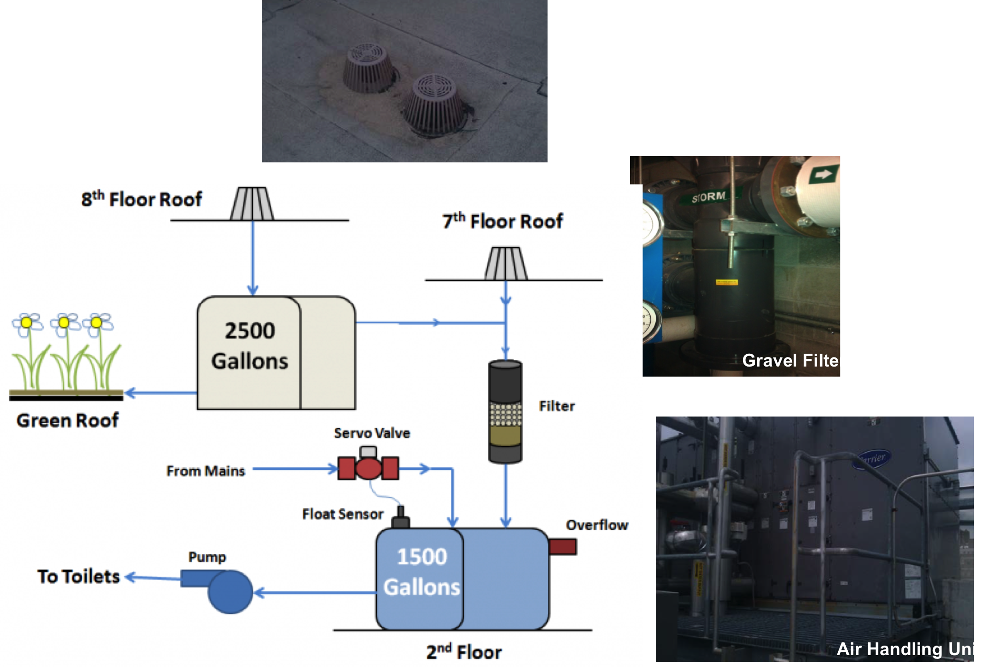

Rainwater Harvesting
Rainwater Harvesting

What is rainwater harvesting?
The rainwater harvesting system collects and uses storm water, saving 41CS an average of 100,000 gallons of water per year.
How does our system benefit NYC?
During heavy rains, the waste water system becomes overwhelmed and sewage water must be dumped directly into NYC rivers. By harvesting rainwater, 41CS helps to reduce the amount of water entering the sewer system during storms.
How does it work?
Drains are located on the 7th and 8th floor roofs which direct rainwater to the 2500 gallon tank located on the 9th floor. While some of this water is used to irrigate the green roof, most of the water is filtered and stored in the 1500 gallon tank on the 2nd floor of 41CS. By feeding water to the toilets in bathrooms below the 2nd floor, 30% of water fixtures in the building are serviced by the water collected in the tank.
|
 |